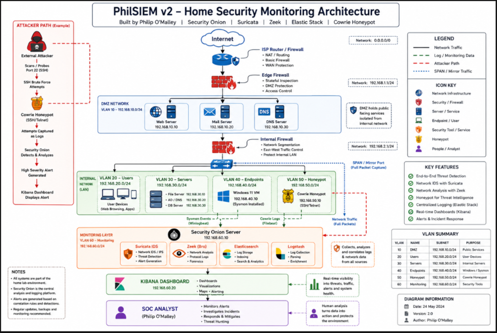

01 / Segmentation
Separate DMZ, user, server, endpoint, honeypot and monitoring VLANs are proposed to illustrate traffic boundaries and reduce unnecessary access between zones.
A proposed home-lab design exploring segmented networks, honeypot telemetry, endpoint monitoring and centralised security analysis.
PROPOSED DESIGN · NOT DEPLOYED
Separate DMZ, user, server, endpoint, honeypot and monitoring VLANs are proposed to illustrate traffic boundaries and reduce unnecessary access between zones.
The design combines Cowrie SSH/Telnet honeypot events, Windows Sysmon endpoint telemetry and mirrored network traffic for complementary visibility.
A planned Security Onion monitoring layer incorporates Suricata, Zeek and Elastic tooling, with Kibana as the proposed interface for reviewing security events.
This is an illustrative workflow based on the design, not a claim that this specific detection has occurred.
The aim is to practise architectural thinking: where telemetry originates, how monitoring tools receive it, why network separation matters and how a SOC analyst turns alerts into evidence-led decisions.
Future iterations can document individual components as they are installed, tested and validated. Until then, the diagram remains a transparent record of the intended system.